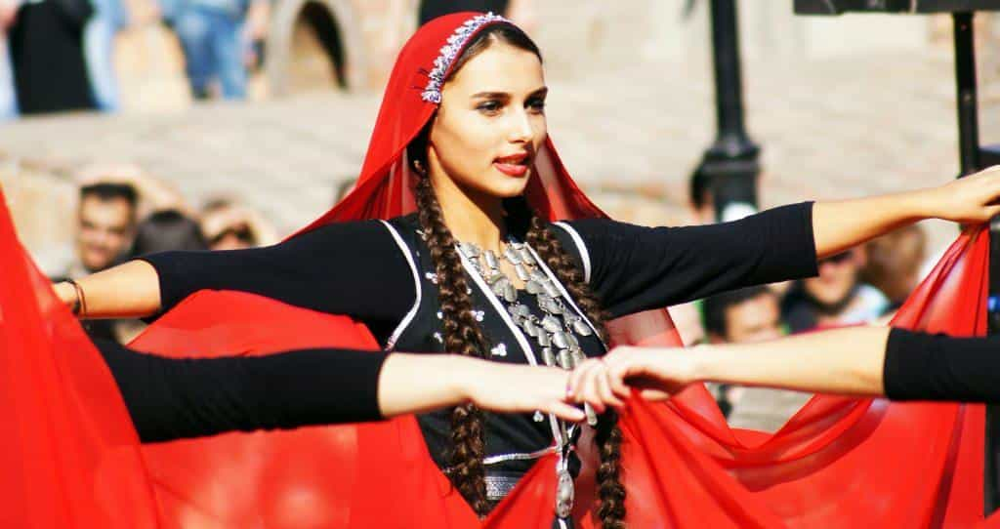

Theo would probably call himself a playboy if it wasn't so passé. He is also a frequent contributor at Expat Ukraine, one of the web's leading resources about life in Ukraine.


After spending three months on location, I can say that Tbilisi is one destination that is relatively ripe for the picking for the manosphere. To the benefit of visitors and the detriment of traditional Georgians, Tbilisi seems to have gone from a nearly theocratic monolith of a country to a rapidly Westernizing hub within a decade. After a three-month visit, I observed vital aspects of its background, culture, and women that I would like to share with you today.
I intend this post to be a catalyst for further discussion and the advancement of masculine knowledge regarding Tbilisi as both a travel destination and a potential place of living.
Nestled at the crossroads of Asia and Eastern Europe, Georgia is yet another former Soviet Union powerhouse of a country that experienced significant instability upon its collapse. Before the Rose Revolution in 2003, an event that was effectively the turning point for Georgia, the nation was had floundered into a state of chaos and was run by organized crime. Since then, however, the country has undergone a metamorphosis, even forming somewhat of an odd alliance with the United States, evident by a one-year Visa-free entry policy for US citizens, city streets that have been named after George W. Bush, and a generally pro-American sentiment.
Despite a 2008 conflict with Russia that led to the departure of the South Ossetia region from Georgian rule, the country remains relatively peaceful and is surprisingly one of the safest destinations to visit in all of Europe. Corruption in everyday life is virtually nonexistent, petty crime rates are remarkably low, and gone are many of the inconveniences prevalent while living abroad in Eastern Europe.
Shota Rustavelli Avenue, the city’s main artery, has a distinctively Western feel to it, a symptom of a culture that is changing at a rate that few could have predicted in prior years. While it is not at the point where there are official Apple stores in shopping malls, brands such as Nike, H&M, and Adidas are springing up quickly.
That said, Tbilisi is not all sunshine and rainbows…
When visiting Tbilisi, one is often told that they must be aware of the nation’s extreme predisposition with the Christian Orthodox Church, the concept of virgin brides, and a traditional way of life.
While it is not uncommon to see individuals blessing themselves outside of churches, one could likely compare Tbilisi’s relationship with Christianity to that of Islam in Turkey. One-half of the population is very fixated on religion, whereas the other half has adopted a Westernized, degenerate mindset that enjoys casual sex, going out drinking, and taking Instagram selfies. That being said, I have yet to meet one single person here who has said they do not believe in God to some degree.
In general, Georgians are quite friendly and welcoming of guests, especially if you are white. There is, however, a rising far-right political movement that is taking place here that is supposedly espousing a very anti-foreign sentiment. However, they appear to be predominately focused on similar goals to their counterparts in the USA, leaving me relatively unconcerned.
Side note: the food here is quite incredible when compared to other places in Eastern Europe. Think Eastern European favorites with spicy, exotic undertones prevalent in Middle Eastern cuisine paired with gourmet wines. Khinkali, Ostri, and Khachapuri have all become new favorites after being here.
Regarding drink, it would appear that every family here has their own type of wine they pridefully brew, with Georgia claiming to be the birthplace of wine. If you hook up with a local, have her bring you some (it will likely be served in a reused Coca-Cola bottle, it’s normal). I never drank red wine much before coming here, and yet I have a new appreciation for it.

Roosh often discusses travel tips for men who like to get laid abroad, and that is visiting countries where a man can cash in on being the exotic looking one of the bunch. Considering that I’ve spent most of my time in Russia, Poland and Ukraine, I was never able to see this phenomenon in action.
What I have noticed, however, is that white men can use this to their benefit while in Tbilisi. Couple this with very high English proficiencies and a cultural understanding of the West, and one can run the standard “cocky/funny” game to a high level of success.
The majority of women here are undeniably darker than those one might find in Ukraine, Poland or other manosphere favorites. Women in Tbilisi look like exotic Ukrainian girls in many ways, a welcome change from the standard “mail order bride” look. While that is my favorite type, Tbilisi could be a goldmine for those who crave something slightly different.
Similar to Turkish girls, they almost have a South American look to them regarding skin tone and body type. On top of this, Tbilisi is undeniably a hipster town. If anything, it reminds me of Berlin to a significant degree. Army jackets, leather, 90s sweatshirts, and combat boots often adorn girls with bangs, highlighted hair, and the occasional tattoo. This is overwhelmingly the fashionable look here.
I can’t tell you how many people told me it would be difficult to get laid in Georgia, and how wrong they were. Many compare the phase that Georgia is going through currently to that of America in the 1970’s, with a sexual revolution just beginning to take hold, and girls being eager to do away with the dated dogmas of the past and become independent, sexually autonomous women free of patriarchal rule. This is both sad and beneficial at the same time.
I got laid on Tinder within three days of being here with a local girl. I merely met her in the town center, took her to Dive Bar at Fabrika, landed the kiss, and jumped in a cab back to my house. It was just like being in the United States. Since then, I’ve had an easy time in this part of the world running a mixture of day and online game with solid results from relatively low effort. If one is into night game, there are plenty of venues to visit as well.

If one likes to chase the typical Georgian, slightly hipster demographic, the can find such girls strolling around venues such as Dive Bar, Drunk Owl, Warsawza, Cafe Gallery (even though it’s a gay bar), and the area’s underground Techno clubs such as Bassiani, Khidi, and Mtkwarze.
For those who are turned off by this demographic, Tbilisi is a hotspot for tourists from Russia and the Middle East enjoying themselves at the cheeseball nightclubs on Jan Shardeni street. This isn’t my scene at all as I don’t like to listen to Electro House remixes of “Yeah” by Usher, visit fake Irish Pubs, or watch girls sing karaoke. If you like ironing your shirt and hitting on basics, this is most likely your spot. Do keep in mind that the cute hipster demographic is the dominant culture in Tbilisi. If that is not your style, I do not suggest going to Tbilisi to run game.
Staying anywhere close to Freedom Square or Rustavelli Avenue is ideal for a short stay, with Airbnb and cab rides being some of the cheapest in Europe. A quality Airbnb can be had here for as little as $450 a month. For a more extended stay, I would likely save even more and move to a less touristy destination such as the Saburtalo section of town that is well connected by the city’s Metro system.
For a white man, one can be quite a novelty here. I remember going to a shopping mall on Christmas Day to pick up a spare computer part. Much to my surprise, I was receiving looks from at least 30% of the women I walked past, some of whom were quite obviously staring at me and giving clear IOI’s.
For a young man in their notch building phase, there is an abundance of easy to lay girls who are receptive to standard, American game. Many are virgins or relatively inexperienced, but still eager to indulge themselves in what is quickly becoming the “new norm” among the millennial generation. It is a strange, strange situation that even I cannot make sense of sometimes. This place is conflicted, to say the least.
On the relationship front, I’ve had one or two girls that I was “exclusive” with while being here. Doing so has made me realize that I would probably never commit to a long-term relationship with a Georgian girl. Feminism, to some degree, has arrived.
Despite the fact that many of these girls are free-spirited and bohemian, many of them live with their families until they are married, and parents in this country are attempting to hold on to the traditional norms they know to be true. As a result, if you are doing something as simple as having a coffee with a girl, she will continuously be lying to her mother, father or brother about where she is.
Society still expects these women to retain their virginity before marriage, and a great deal of shame accompanies women who are known to have slept around. A culture war is starting to take place between the Western values and Georgian traditionalism, and as a visiting man, you’re stuck in the middle of it.
The very nature of dating a Georgian girl will mean one is spending time with someone who is a trained liar, sadly. Just to have a simple date with a foreign man, let alone a whole relationship, she is probably going to be lying to someone. While she may be lying because of some silly rule in Georgia, it makes one think that if she can lie to her mother so comfortably, what’s stopping her from lying to you?
With a one-year Visa-free travel policy for Americans, low prices, and a sexual revolution afoot, there are numerous benefits to traveling to Tbilisi. I considered not publishing this article as, depending on one’s interests, this city could be an absolute goldmine to those willing to arrive, put in the work of building a social circle, and set up shop for a year or so. Since prices are nearly identical to considerably poorer, less livable countries such as Ukraine, this can be done at an almost identical cost and with a significantly more extended period of Visa-free travel time.
To top it off, English levels are very high, making communication typically quite straightforward. As feminism continues to grow in popularity, women will become more “independent” and seek out casual sex.
Tbilisi, Georgia, provides many of the modern amenities and cultural imperatives that Western nations offer while remaining an exotic, post-Soviet, Caucasian city sure to produce seemingly endless novelty to those visiting. I would suggest it to someone who is looking for a bit of a change of scenery when traveling through Eastern Europe, or at the very least, a lovely destination to escape the brutal Eastern European winter.
Read More: 4 Reasons You Should Make A Trip To The Country Of Georgia